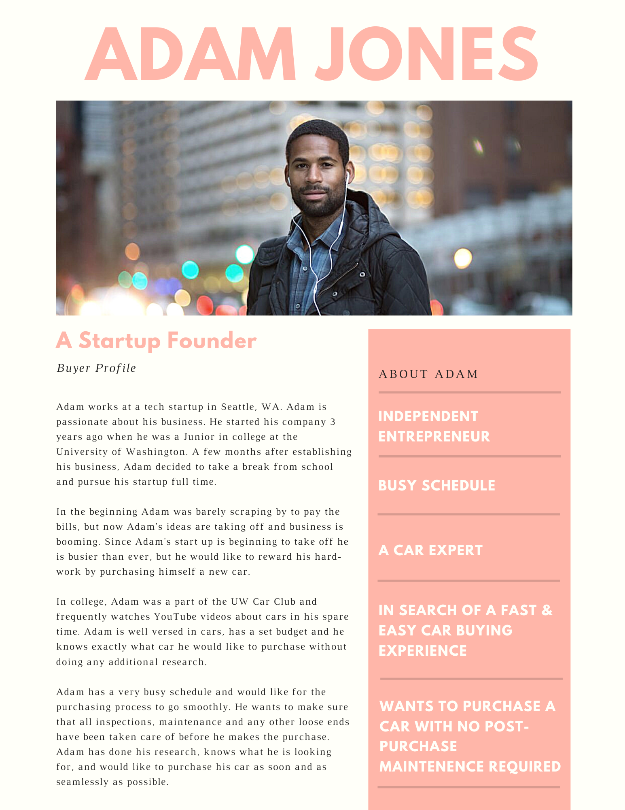

Madison Colvin
Consumer Behavior
Millennials & the Car Buying Process
Project Overview
My Consumer Behavior course culminated in a final project where we were placed in groups of five and challenged to examine millennials and the car buying process through qualitative research methodologies. The report sought to isolate trends and shifts in the car buying process, as perceived by millennials. As this demographic makes up an increasing amount of the workforce, the industry must evolve to new expectations and critiques that are frequently encountered there. The report opens with an overview of secondary research conducted. This research focuses on the frequency of use and feelings towards car dealerships, the levels and types of research conducted during the buying process, and how identity is perceived in car purchase decisions. From there, primary research was conducted: one-on-one interviews and a focus group. Interview subjects recounted the processes and feelings experienced during their first car purchases. Focus group subjects discussed what they seek in cars, what the process looks like, and who they trust for information. Finally, the report concludes that car sellers should seek ways to implement more technologically savvy and experiential shopping experiences. We also recommended continuing the use of traditional marketing methods to reach older demographics, with the intent of building enough trust to be passed down to younger generations to build brand loyalty there.
Secondary Research
According to Mintel’s 2019 report on the car purchasing process, consumers have an overall negative attitude towards purchasing cars. Consumers don’t want to engage in this process, but they feel as though it is a necessary process to fulfill their vehicle demands. In addition, the car purchasing process hasn’t changed much in recent years, meaning, the process entails going to a car dealership. A study from FICO reports that 82% of millennials prefer to buy their vehicle directly through a car dealership rather than buying online. In addition to this research, Autotrade’s study shows that millennials spend over 17 hours researching a vehicle before making a purchase and, “71% of them say that they have to be aware of the possible vehicle choices,” before making a purchasing decision.
However, consumers find the experience of visiting a car dealership unenjoyable, as 50% of consumers over the age of 18 planning to purchase a vehicle within the next 3 years find car dealers to be untrustworthy. Therefore, online auto retailers such as Cars.com and CarMax have become increasingly popular for purchasing cars. Most consumers also preferred viewing third-party sites for ratings and reviews before buying their vehicle.
Millennials tend to visit several dealerships when deciding on a car, individually evaluating the trustworthiness of dealerships before making a purchase. Millennials also prefer performing heavy self-research surrounding cars they are considering before going to the dealership. In addition, this generation often evaluates the online ratings and reviews of the car dealership they wish to purchase their car at, before even setting foot on the dealership.
There are two trends affecting the car buying process. Firstly, consumers are looking for an elevated in-store and online experience. Modern retailers place emphasis on experience economy, and have transformed stores accordingly to create new and state-of-the-art shopping experiences for consumers. In addition, they also look for more personalization in their retail experience. Especially for millennials, car shopping is no longer a one-size-fits-all approach. Consumers constantly expect better products that meet their increasingly specific needs and wants.
Millennials are also looking for a vehicle that is practical and useful. This generation tends to look for affordable, practical, fun to drive, and fuel efficient cars that fit well in a city and offer some level of smartphone connectivity. As millennials already have features in mind early on in the car buying process, they complete heavy research on their own as the first step in the purchasing process. After they know what they want to buy, they will move on to the purchasing phase.
However, millennials are also a difficult group to market cars to. According to Mintel, this is largely due to the frequency and severity of student loan debt accumulated by this generation resulting in millennials on average being willing to pay under $20,000 per car. From there, one study by AutoNews found, “33% percent of millennials said that they want a car that stands out and 48% said that they want a car that reflects their personality.” This implies that while millennials are still considering their identity when purchasing cars, it represents a relatively low priority for the demographic as a whole. Since millennials tend to have a set budget and know exactly what features they want in a car before visiting a dealership, millennials will choose what dealerships they visit based upon their budget and sought out features and might overlook the dealerships that don’t reflect their personality.
Marketing to millennials is especially difficult as their wants, needs, and preferences have changed significantly from generations prior. Millennials frequently use mobile devices, and like to do almost everything on them. With such weight on mobile, millennials are more likely to buy a car with online advertising, or brands with successful and engaging social media presences. A study from Deloitte states that 47% of millennials’ purchasing decisions are influenced by social media. This implies that social media can play an important and even necessary role in influencing millennials’ car purchasing decisions.
Through looking at the trends surrounding millennials’ considered set of vehicles and the actual buying process, the future of car purchasing processes can look rather different from other generations. According to Mintel, consumers between ages 18 to 24 believe that dealerships will be a thing of the past. Young consumers are interested in cutting out the middleman, and thus 60% of consumers ages 18 to 24 believe that vehicles should be purchased directly from automakers. In addition, consumers dislike price negotiations during car purchases. Therefore, no-haggle pricing could slowly become more normalized.
Research Findings
Interview Findings
Through conducting numerous one-on-one interviews with millennials who have recently purchased a car, some insights were gained surrounding millennials’ thought processes and feelings when purchasing a car. To get in-depth answers from a sizable pool of millennial car buyers, four individuals who had purchased a vehicle in the last year were interviewed. They were asked to share their experience of buying a car, from pre-purchase to post-purchase. An interesting trend that all subjects reported during pre-purchase, was that all had a set budget and had conducted copious amounts of research. Interviewees conducted car research by reading articles on the internet, and by receiving first-hand advice from family members. Before it was time to purchase a car, interviewees knew almost everything about the car before making a purchasing decision, what their budget was, and knew all about the features they wanted.
Interview subjects reported purchasing both from dealerships and purchasing used cars through individuals online through sites such as Craigslist. When it came to the interviewees’ thoughts on car dealerships, there were mixed reviews. One interviewee, Samuel, raved about the dealership he purchased his car at, because the salesman, “talked to the manager to get the car discounted $3000”. On the other hand, another interviewee, Carson, felt as though he had received poor service at his dealership and spoke about how, “the process of purchasing the car took weeks, there was little communication and it seemed impossible to leave the dealership. When I finally purchased my car the process took hours.” Additionally, another interviewee Nikki didn’t have a great outlook on buying cars at dealerships, she stated that “I just go in to get the deal, and get out.” Nikki expressed that most of the time spent at the car dealership was a waste of time, considering there was not a purchase made the majority of visits.
Although the purchasing process through a dealership can be quite tedious, all interview subjects reported that they felt more “secure” and as if they were making a “safe” purchasing decision when buying a car through a dealership, versus someone selling online or on the street. Nikki chose a unique option besides going to car dealerships. She would personally search her town for cars on the street with “for-sale” signs and she would call the owners and haggle. From the interview pool only one interviewee, Taylor, purchased a car online. She purchased a car that was under her $3000 budget through Craigslist. Taylor was only in need of the car for a short period of time and was looking to resell the vehicle a few months later. She stated that the only reason why she felt comfortable purchasing her car through an individual online is because her budget was low and the car was not meant to last a long time. Taylor stated that, “if I was looking for a more long term car, I would have purchased something more reliable from a dealership”.
Lastly, in regards to customer service at car dealerships, interview subjects were largely unhappy and unsatisfied. Interviewee Carson, stated that the customer service he received was unhelpful. He felt as though he knew more about the car he wished to purchase than the salesman, because of all of the research he had completed pre-purchase. In addition to this, Nikki wasn’t satisfied with the customer service at her dealership. When asked what should be changed, she expressed doubt that anything can truly improve the car dealership experience. “It’s just like going to the department of licensing to get a license,” said Nikki.
Interviewees made it clear that millennials love the security of a car dealership, but they dislike the pushy sales tactics, copious amounts of paperwork, and endless hours spent there. Another key takeaway from the interviews was that it’s very important for millennials to feel safe when making a large purchase, and a dealership helps fulfill this sense of security. Additionally, most of the subjects knew what car they wished to purchase before even stepping foot in a dealership, therefore they don’t perceive much value or need for salespeople. Instead, they believe cars should sell themselves.
Focus Group Findings
A focus group was also conducted to look into the car buying process of millennials, it consisted of a drawing activity and a follow-up set of questions. The participants were all undergraduate students who didn’t express a desire to buy a car but had very detailed ideas about what they would like in a car, as well as what steps are required to attain a car. Participants were asked to draw their ideal car, then to draw the process of getting a car, and finally asked to draw who they trust for car information. After each drawing participants shared and explained their work. The insights derived from this study were similar to the one-on-one interviews, except these students were at the ideation stage of the car buying process and not actually looking into buying. This meant less tangible answers but very valuable insight into the process and associations these potential consumers would have.
Focus Group Dream Car Drawings
Drawings of the Car Buying Process
Only one participant explicitly mentioned research at the beginning while others had assumed it prior. Going to the dealership was stated amongst all in the study and they all agreed that buying a car should be done in person. This relates to the idea that these big purchases require much higher involvement in the cognitive process, such as extensive research. This also showed the importance of financing a car as mentions of budget were repeated consistently throughout discussions.
Across almost all of the group, no specific brands were mentioned. The only exception was quickly followed up by clarifying they liked vintage cars in general, this brand only serving as an example. While dealerships were seen as an essential part of the process, they only ever stated the desire to go to a “trusted dealership”. This further emphasizes the fact that millennials don’t care about brands and perception as much as they value the features offered by the car, and the channel used to acquire the car. We noticed that focus group participants favored sedan-type vehicles that are fuel efficient and offer safety features. There are certain preferences like color that are common factors most consumers are able to control in other purchases, which is a choice that is expected to be customized during selection.
The final part of this study focused on who or what individuals trust as sources of information for making car purchase decisions. This was an underlying assumption throughout the discussions above when they shared their ideal process. By directly asking them to think about how trust plays a role in the process, they identified the key figures that impact their final decision. Trusted brands like Carfax were identified as part of the research, as well as friends and family members that participants deemed knowledgeable enough to provide helpful information. These influencers help to shape the rest of the car buying process and are thus very valuable for marketers to understand that winning millennial markets may involve first winning these sources of information. Furthermore, these influencers may be providing specific ideas into car types, brands, and even dealerships to visit. This shows an overall theme derived from the focus group: the need to establish trust. From research to actually going to the dealership and selecting a car, this instrumental value is critical to the process.
Actionable Recommendations
The research conducted indicated a distinct disliking for car dealerships and their inherent buying experiences, across subjects. Conversely, subjects still expressed a traditional sense of excitement and passion towards cars themselves. Even when some individuals lacked preferences, the study was hard-pressed to find any individual who did not want to or plan on owning a car. With all this in mind, one prime insight is to deliver existing buyer preferences and wants more frequently within the car buying process, thus creating more experiential shopping. By focusing on innovating and improving around the actual experience, car sellers can shift focus away from their salespeople and onto new, fun, and interactive sources of information. This could be in the form of implementing more kiosk-based sales in dealerships, even trying to eliminate the influence of car salespeople in negotiating price. Car brands and dealerships could also seek to implement new technology to create revolutionary delivery methods. In 2017, Audi started implementing virtual reality test drives across European markets. Audi credits the VR’s ability to offer a brand new driving experience while also succinctly and intuitively educating consumers on available features. VR technology provides another opportunity for car dealerships to create an experience that consumers could actually seek out. Such new test drives could break the mundanity of car dealerships, by taking the test drive away from suburban streets and into the Nürburgring race track, the Sahara Desert, or any location a consumer can imagine.
While the new understanding of the car buying process amongst millennials could be an opportunity to develop entirely new experiences, market players should also be aware of how big of a factor trust could play in future car brand positioning. All subjects were keen to discuss that trust was important, and that most of their trust lies with themselves, third parties, friends, and loved ones. This indicates that with the proper omnichannel promotions, a brand could build an understanding with consumers that leads them to recommend the brand. If a brand can engage one consumer enough, that consumer might just be an individual that another turns to for car advice. This insight implies that traditional marketing avenues can still be beneficial for car brands. For example, by developing brand attributions such as “safe” or “trustworthy” in older demographics, a brand increases the likelihood of a parent recommending it to a child. If the product delivers on features millennials care about, then that brand could build valuable loyalty in a younger demographic. Traditional marketing should therefore attempt to build the brand attributes that increase the chance of the product being recommended, all while guaranteeing a product designed for a younger generation.
Persona One
Persona Two

Persona Three
Sources
- “Car Purchasing Process - US - July 2019.” Mintel Academic, July 2019, academic.mintel.com/display/970028/.
- Karesky, Tess. “Millennials Car Shoppers.” Cdkglobal.com, 2015, www.autonews.com/Assets/pdf/MillenialsWhitePaper_Final.pdf.
- “Millennial Car Shoppers Are Ready to Buy – What Your Dealership Needs to Know.” V12, 20AD, v12data.com/blog/millennial-car-shoppers-are-ready-buy-what-your-dealership-needs-know/.
- Turner, Chanell. “Study Shows That Younger Millennials and Generation Z Car Buyers Still Want to Visit Dealerships When Purchasing Cars.” CBT Automotive Network, 30 Aug. 2019, www.cbtnews.com/study-shows-that-younger-millennials-and-generation-z-car-buyers-still-want-to-visit-dealerships-when-purchasing-cars/.
- Audi Launches Virtual Reality Technology in Dealerships.” Audi MediaCenter, 30 Aug. 2017, www.audi-mediacenter.com/en/press-releases/audi-launches-virtual-reality-technology-in-dealerships-9270.